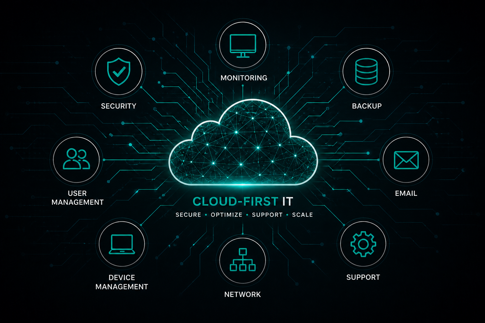

Managed IT services that keep your business secure, productive, and running smoothly.
AutoSysTek helps small and mid-sized businesses reduce downtime, protect employees, improve cybersecurity, manage Microsoft 365, and eliminate day-to-day IT headaches with security-focused managed IT services.

Practical IT support built for growing businesses.
AutoSysTek was founded by experienced MSP professionals who wanted to build a more responsive, security-focused, and modern IT experience for businesses that need dependable support.
We focus on proactive support, clean systems, cloud-first solutions, cybersecurity, backups, documentation, advanced endpoint protection, DNS filtering, phishing awareness training, and practical IT guidance that helps businesses stay productive.
Our goal is simple: help businesses spend less time fighting technology and more time focusing on operations, employees, and growth.

IT services designed for real business needs.
We help businesses manage devices, employees, Microsoft 365, backups, cybersecurity, cloud systems, and ongoing support.
Managed IT & Advanced Security
Proactive monitoring, patch management, advanced antivirus, endpoint DNS filtering, phishing awareness training, account security, and ongoing IT guidance included as part of our managed service.
Microsoft 365 Management
Email support, SharePoint, OneDrive, Teams administration, licensing assistance, cloud management, and security-focused configuration.
Employee & Device Support
Fast support for users, computers, onboarding, remote employees, password resets, printers, and day-to-day technical issues.
Infrastructure & IT Cleanup
Network upgrades, migrations, vendor coordination, documentation, cloud transitions, and modernization of outdated environments.
Common IT problems we help businesses solve.
Many businesses struggle with unreliable systems, reactive support, weak security practices, and technology that slows employees down.
Slow or unreliable computers
Reduce downtime and keep employees productive with proactive maintenance and monitoring.
Microsoft 365 issues
Resolve email problems, account issues, permissions, licensing, and cloud management headaches.
Security gaps and employee risk
Strengthen your business with advanced endpoint protection, DNS filtering, phishing awareness training, account security, and proactive patch management.
No backup or recovery plan
Protect business data with cloud backups, recovery planning, and better operational resilience.
Reactive IT support
Move away from “break-fix” support and toward proactive management and faster response times.
Messy systems and vendors
Organize documentation, simplify environments, and coordinate technology vendors more effectively.
Ready for better IT support?
Tell us what feels messy, risky, unreliable, or frustrating. We’ll help you identify the right next step for your business.